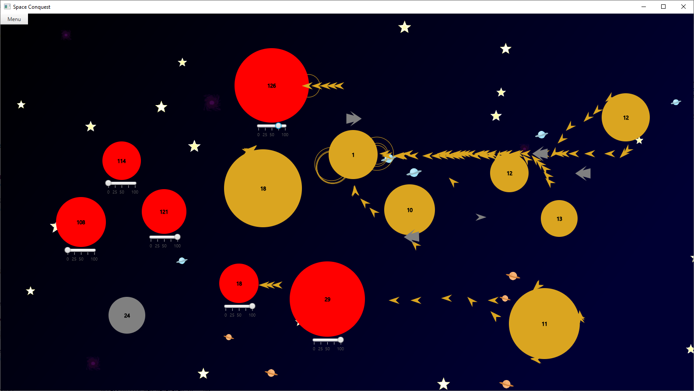

Space Conquest
Java, JavaFX
With Louis Jolliet
The game
Space Conquest is a Java project created during our final year of an IT bachelor's degree in University of Bordeaux (FR). It's a strategy game where you are the Ambassador of the red planet and will have to conquest all planets around. It contains an Implementation of the A* algorithm.

Another more advanced game
Rules
To conquier another planet you'll have to send spaceships on it. You also can choose the amount of spaceships sent (in %). To win a game you need to take every planets belonging to users, it is not necessary to take all neutral planets. You cannot send too much spaceships at a time, so when you try to send a lot of spaceships they will be withdrawn from your spaceships and sent periodically in waves if there is no allied spaceships in orbit.
Controls
- Use the option tab in the main menu to configure the game as you like.
- Use drag and drop from one of your planet to an enemy planet to attack this planet with your spaceships.
- Use drag and drop from one of your planet to another one to send spaceships on this planet.
- Use the slider below your planets to choose which percentage of spaceships will go when sending spaceships.
- Click on a ship to select its squadron.
- Click and create a rectangle to select multiple squadrons.
- If a squadron is selected (highlighted in white), you can click on a planet to change its destination.
- During a game, use the menu at the left top of the screen to save, restore or exit the game.
- You can select spaceships with a drag and drop movements, it will display a selection area.
Functionnalities
Planets
- Planet are generated with random size, speed production and position.
- A planet produces spaceships. The number of available spaceships is displayed on the planet.
- When a planet is attacked, if its available spaceships fall below 0, the attacker become the new owner.
- A planet can receive allied spaceships, which will be added to its available spaceships.
- There is a minimal distance between each player's starting planet to balance the game.
- There is also a minimal distance, smaller, between any planet and a neutral planet.
Spaceships
- There is two different type of spaceship, with different speed, damage and length.
- Spaceships must be launched from a planet.
- A spaceships hitting an enemy planet will withdraw one spaceship to the planet's available spaceships.
- A spaceships arriving on an allied planet will add one spaceship to the planet's available spaceships.
- A spaceship being part of a selected squadron will be highlighted in white.
- Selected spaceships can have their target changed.
- Spaceships automatically follow a path without obstacle when getting from a planet A to a planet B.
- If a spaceship crash on a enemy planet, an explosion appears.
AI
- It is possible to play against 1 to 4 AI.
- AI have a simple behaviour, they attack the nearest planet.
- There is three differents type of AI : Classic, Safe and Aggressive AI. They will send more or less ships depending on their type.
Pirates
- During the game, neutral spaceships will spawn on the border of the screen and attack randomly players and neutral planets.
Save system
- It is possible to save/restore your game using the menu at the top left of the screen during a game.
- The save is stored in "res/save.ser".
- It takes some time to save/restore, if your screen freeze just wait a bit.
- An alert warn you when the program finished saving/restoring your game. You can close it with the "ok" button, it will closes itself automatically 2 seconds later
Options
- There is an option tab available in the main menu. Clicking on "Apply" is necessary to save changes.
- Possibility to choose between 2 to 5 players. (One human and only AI).
- Possibility to choose between 5 to 20 neutral planets.
- Possibility to choose the screen size.
- Possibility to optimize the game.
Optimization
- This mode can be activated if your computer is too slow to run this game.
- There is no images in this mode.
- Pathfinder is less precise.
- There is no collision drawing.